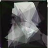
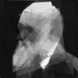
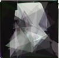
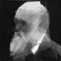
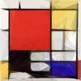
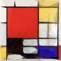

{kind=link}
{kind=link}
{kind=link}
{kind=link}
What is this?
A simulated annealing like optimization algorithm, a reimplementation of Roger Alsing's excellent idea.We start from random 50 polygons that are invisible. In each optimization step we randomly modify one parameter (like color components or polygon vertices) and check whether such new variant looks more like the original image. If it is, we keep it, and continue to mutate this one instead.
Fitness is a sum of pixel-by-pixel differences from the original image. Lower number is better.
Displayed fitness is now a percentage of how close the new image is to the original one (1-current difference/maximum difference). The best possible is 100%.
This new fitness is normalized so that it's easier to compare different images and different sizes.
This implementation is based on Roger Alsing's description, though not on his code. There are probably some subtle differences in how the mutations are done, how the polygons are represented and how the fitness is computed as I tried to figure out how to have it running reasonably fast in JavaScript + <canvas> environment.
How does it look after some time?

- 50 polygons (4-vertex)
- ~15 minutes
- 644 benefitial mutations
- 6,120 candidates
- 88.74% fitness

- 50 polygons (6-vertex)
- ~15 minutes
- 646 benefitial mutations
- 6,024 candidates
- 89.04% fitness
- 50 polygons (10-vertex)
- ~15 minutes
- 645 benefitial mutations
- 5,367 candidates
- 87.01% fitness
- 50 polygons (6-vertex)
- ~45 minutes
- 1,476 benefitial mutations
- 23,694 candidates
- 93.35% fitness
- 50 polygons (6-vertex)
- ~60 minutes
- 1,595 benefitial mutations
- 28,888 candidates
- 93.46% fitness
- 50 polygons (6-vertex)
- ~120 minutes
- 1,966 benefitial mutations
- 50,500 candidates
- 93.89% fitness

- 50 polygons (6-vertex)
- ~4 hours
- 4,134 benefitial mutations
- 807,890 candidates
- 95.59% fitness
- Thanks to Sergei.

- 50 polygons (6-vertex)
- ~2 days
- 7,425 benefitial mutations
- 5,288,801 candidates
- 96.36% fitness
- Thanks to Julian.
Does it work on all images?
It depends, success varies. The best seem to be color images with well defined features.
 



- 50 polygons (6-vertex)
- 4,358 benefitial mutations
- 227,852 candidates
- 95.97% fitness
- Thanks to Quialiss.
- Images from different runs.


- 50 polygons (6-vertex)
- 718+ benefitial mutations
- 22,440+ candidates
- 95.24% fitness
- Images from different runs.

- 100 polygons (6-vertex)
- 9,686 benefitial mutations
- 1,220,569 candidates
- 96.21% fitness
- Thanks to Steven.


- 100 polygons (5-vertex)
- 10,490 benefitial mutations
- 2,161,018 candidates
- 95.03% fitness
- Thanks to Asa, Will, Nic & Yuku.
- Images from different runs.
 

- 50 polygons (6-vertex)
- 6,280 benefitial mutations
- 683,806 candidates
- Thanks to alexs for the final image.
- Images from different runs.
- 100 polygons (5-vertex)
- 6,974 benefitial mutations
- 2,056,467 candidates
- 95.68% fitness
- Thanks to Yuku.
- 100 polygons (6-vertex)
- 6,557 benefitial mutations
- 44,212,346 candidates
- 99.43% fitness
- Thanks to Alex.

- 50 polygons (6-vertex)
- 4,296 benefitial mutations
- 2,404,942 candidates
- 97.6% fitness
- Thanks to Kyle.

- 50 polygons (6-vertex)
- 10,605 benefitial mutations
- 11,104,153 candidates
- 93.84% fitness
- Thanks to KRHAiNOS.
- 50 polygons (6-vertex)
- 11,147 benefitial mutations
- 1,021,165 candidates
- 95.04% fitness
- Thanks to Simon.
See also Firefox logo evolution video. Thanks to Brooss.

- Distributed computing effort: original image size 600px X 900px, divided into 24 parts each 150px X 150px
- 24 x 100 polygons (6-vertex)
- 109,438+ benefitial mutations (total)
- 8,243,441+ candidates (total)
- Fitness: min 95.01%, max 99.08%, mean 96.59%, median 96.65%
- Thanks to Agro momusuindo.net (Indonesia).
- Full resolution final image
{kind=link}

- Multiple 50-polygon pieces, exported to SVG, joined in Illustrator
- Thanks to Antonio Ares.
- Full resolution final image
{kind=link}
What is DNA import/export?
Warning: Another experimentalClick Export DNA to copy polygon representation of the current best image to the clipboard. You can use it to save your optimization state, for example to send it to somebody by mail or post it on the web.
If you have such saved DNA string, you can later on paste it into the clipboard and click on Import DNA. This should reproduce the optimization state from the time it was saved via export.
Please note that DNA is independent of the original image. It means that if you used a custom image, you should also set this image (via image form) to reproduce a complete state. (Or you could play with switching images/DNA midway)
NUMBER_OF_VERTICES NUMBER_OF_POLYGONS R G B ALPHA X0 Y0 X1 Y1 ... XN YN ... R G B ALPHA X0 Y0 X1 Y1 ... XN YN ...
Click Export DNA as SVG to get vector image from your current best DNA. Thanks to Martin for SVG export.
Requirements
Tested and works on (example mutations / second speed for Mona Lisa at the start of optimization on my notebook, Windows 7, Nvidia Quadro 2000M):
- (~221) Chrome 15
- (~219) Firefox 11 nightly
- (~158) Firefox 8
- (~154) Chrome 17 canary
- (~134) Internet Explorer 9
- (~98) Opera 11.52
- (~73) Opera 12.00 alpha